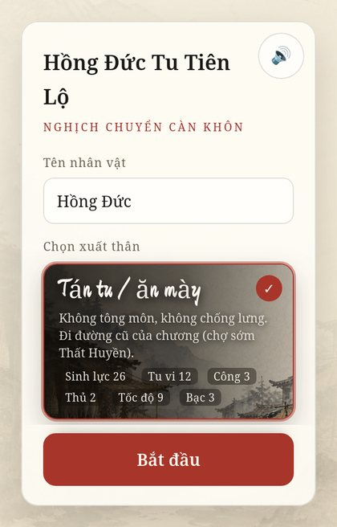

Bản chạy thật · đo bằng Safari (WebKit)
Mở game thử lạiĐúng như anh nói: nút loa nằm đè lên chữ trong phim. Đã bỏ hẳn nút đó. Hai chỗ còn lại giữ nguyên: nút trên thanh trên và nút trong thẻ tạo nhân vật.
| Nút loa | Trước | Sau |
|---|---|---|
| Trên phim mở đầu | có, đè lên chữ | đã bỏ |
| Trên thanh trên | có | giữ |
| Trong thẻ tạo nhân vật | có | giữ |
Tôi tái hiện được đúng lỗi, và tìm ra nguyên nhân thật. Lần trước sửa chưa đúng gốc nên nó quay lại.
position:fixed; inset:0
— trên iPhone, khung này được tính theo chiều cao màn hình đầy đủ
(kể cả phần thanh công cụ Safari che), chứ không phải phần đang nhìn thấy.
Vì vậy thẻ bị đẩy xuống, nút "Bắt đầu" nằm dưới đáy tầm nhìn.
Thẻ còn dùng max-height:92vh — cũng tính theo màn đầy đủ, nên cũng sai.
Đo được cụ thể: trên iPhone 13, thẻ cao 776 điểm trong khi vùng nhìn thấy chỉ 664. Nút "Bắt đầu" bị cắt mất 37 điểm dưới đáy màn hình — chỉ một dải mỏng ở trên cùng là bấm được, phần lớn nút nằm ngoài.
Trên iPhone SE (màn 500 điểm), nút ra hoàn toàn ngoài màn hình: đo 13 điểm dọc theo nút thì 0/13 điểm bấm được.
height:100svh và thẻ đặt
max-height:calc(100svh - 40px). svh là chiều cao vùng nhìn thấy
khi thanh công cụ đang hiện — trường hợp nhỏ nhất, nên luôn vừa, và không
giật khi thanh công cụ ẩn/hiện. Máy cũ không hiểu svh thì tự lùi về
vh như trước, không hỏng gì.

Mỗi trường hợp đều bấm thật vào nút rồi kiểm xem có vào game không:
| Trường hợp | Nút trong màn | Điểm bấm được | Vào game |
|---|---|---|---|
| iPhone 13 | có | 13/13 | được |
| iPhone SE (màn 500) | có | 13/13 | được |
| iPhone 13 xoay ngang (430) | có | 13/13 | được |
| Màn ngang 390 | có | 13/13 | được |
| iPhone 15 Pro Max | có | 13/13 | được |
| Màn rất thấp (600) | có | 13/13 | được |
| Bốn tiếng vẫn kêu | 0.149 / 0.076 / 0.122 / 0.113 |
| Tắt tiếng vẫn nhớ | đúng |
| Chơi 2 lượt liên tiếp | không lỗi JS |
| Bộ test cũ | 161 đạt · 124 đạt |
| Hai bản (máy chủ và tĩnh) | khớp nhau |